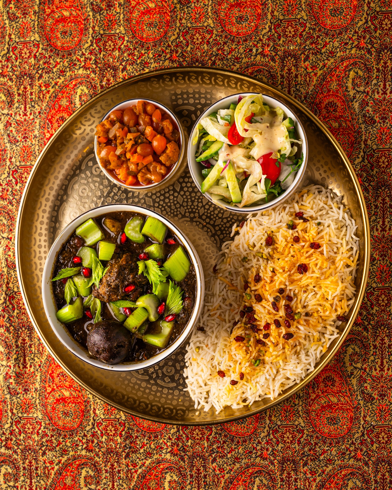
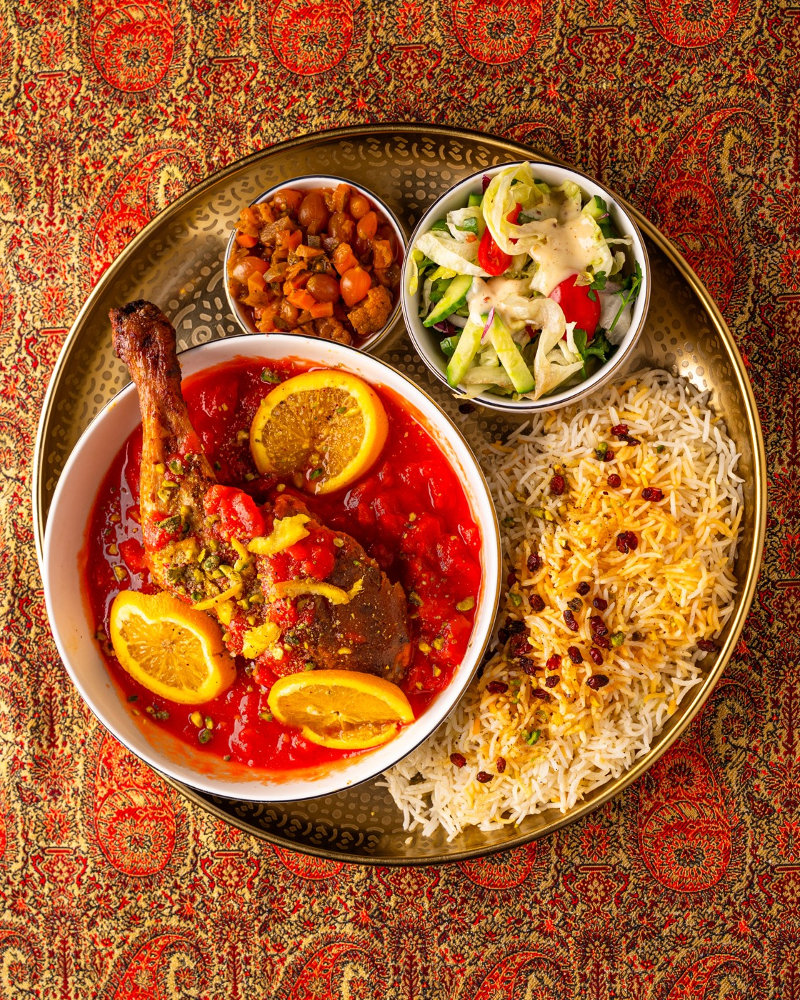
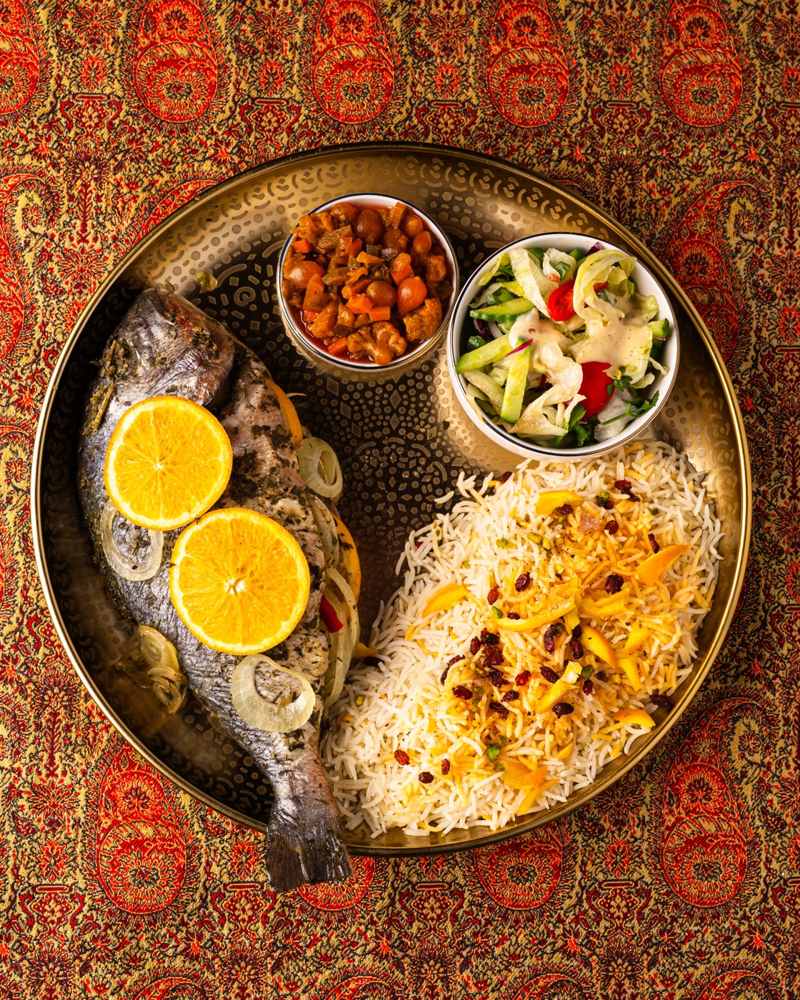
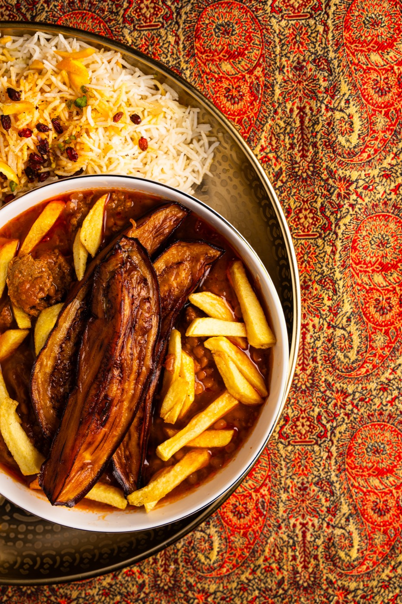
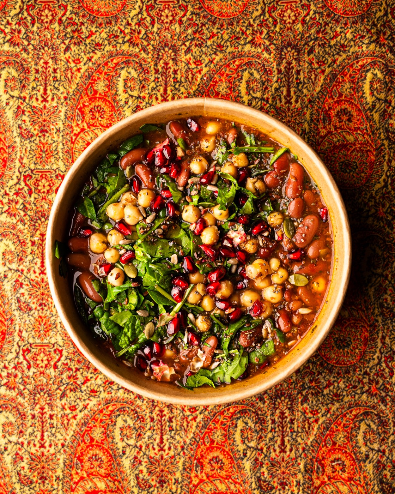
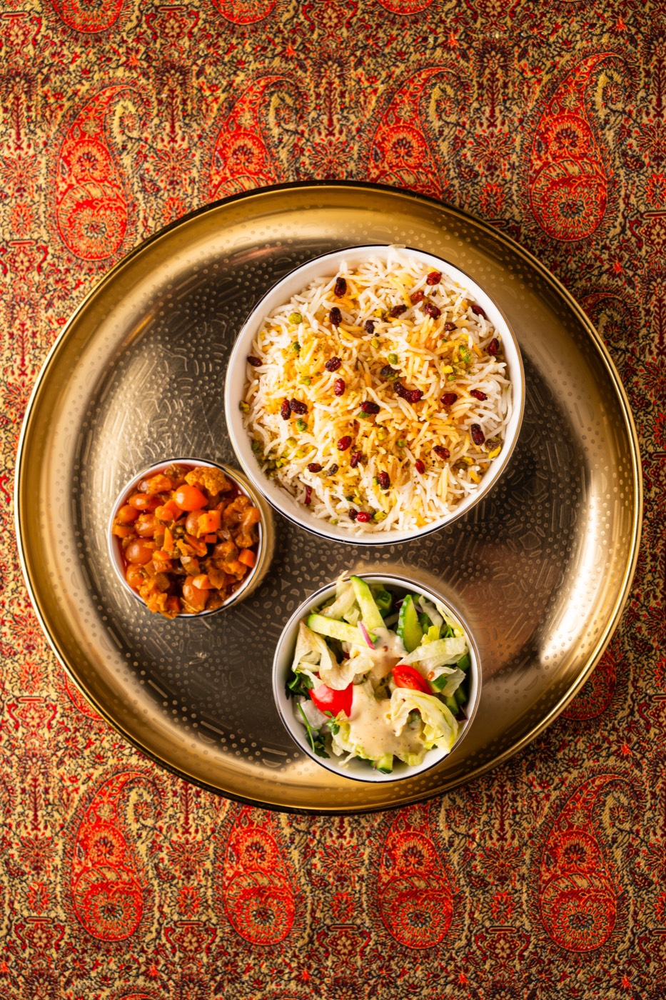
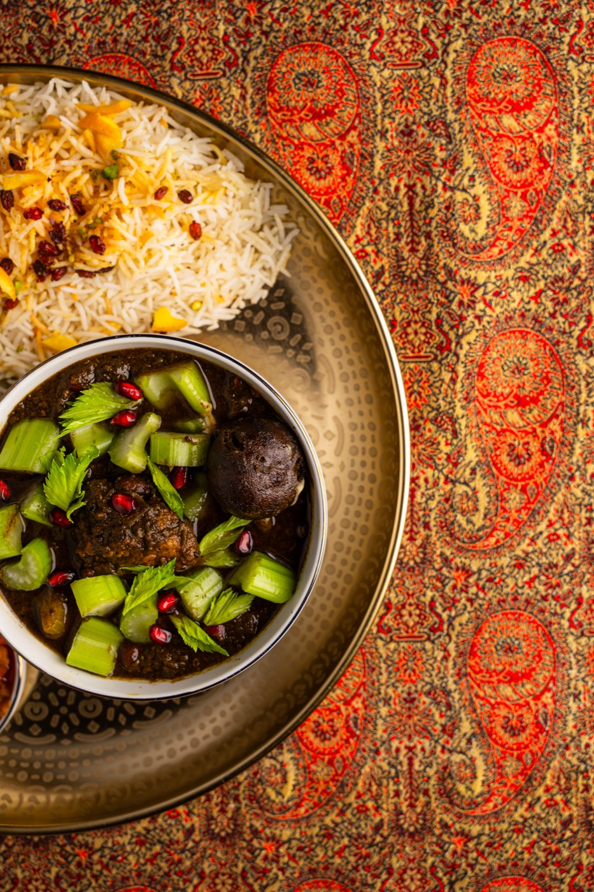
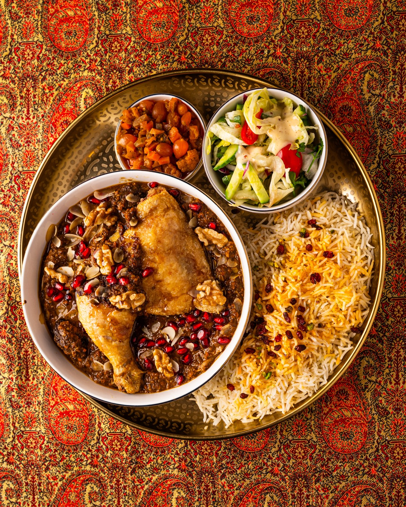
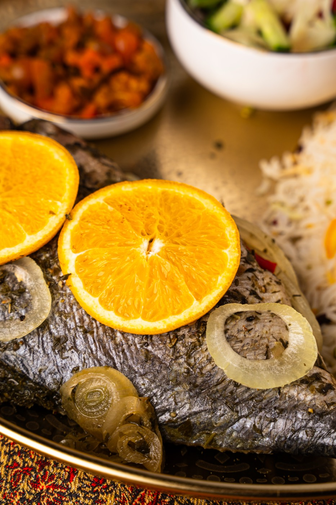
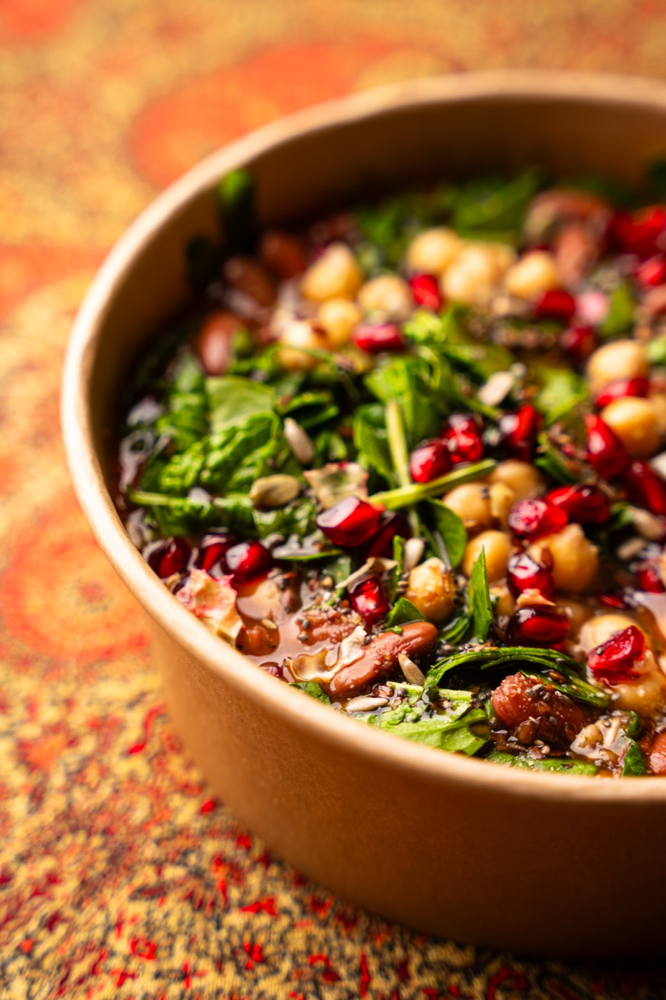

Experience the warmth of a Persian home, told through food.
Persian dishes, made with care and meant to be enjoyed together.








At DENA'S Persian Fusion Restaurant, every dish tells part of a family journey from Iran to Den Haag. What began as Dena's home recipes has grown into a cozy kitchen where everyone feels like family. It's Persian heritage retold through fresh, organic ingredients, Dutch produce, warm hospitality, and the love of sharing food.
Discover our most beloved creations

Persian stew made with eggplants, tomatoes and veal

Fresh sea bass with Persian herbs and saffron rice

Homecooked meal of the week
From a family kitchen in Iran to the heart of Den Haag, discover how DENA Stories came to be. Learn about our journey, our values, and what makes our food special.
Read our story

Elevate your events with our premium catering experience. From intimate gatherings to grand celebrations, we bring Persian culinary excellence directly to you.
Learn moreEverything you need to know before your visit
At DENA's it means cooking traditional Persian recipes — Ghormeh Sabzi, Fesenjoon, Zereshk Polo — using Dutch seasonal produce and fresh North Sea fish. The spices, techniques, and philosophy are pure Persian. The ingredients come from what Den Haag provides.
No. Persian food is aromatic, not spicy. The complexity comes from the balance of sour and sweet — pomegranate, dried lime, saffron, barberries — and long slow cooking. Bold and distinctive, but not hot. A good option for people who think they dislike "exotic" food.
Yes. Kuku Sabzi (our herb frittata starter) is naturally vegetarian. Ask the team when booking or on arrival for current vegetarian-friendly dishes — the daily specials sometimes include plant-based options.
You can book online via TheFork — we recommend booking ahead on Friday and Saturday evenings as the room is small and fills up. Walk-ins are welcome earlier in the week.
Book a tablePrinsestraat 62, 2513 CE Den Haag — a 15-minute walk from Den Haag Centraal station, close to the Mauritshuis and Binnenhof. See our contact page for directions.
Yes. We cater for corporate events, private celebrations, and custom culinary experiences. Contact us at info@dena-restaurant.com or visit our catering page.
Tuesday – Thursday: 11:00 – 19:00
Friday & Saturday: 11:00 – 22:00
Sunday: 11:00 – 19:00